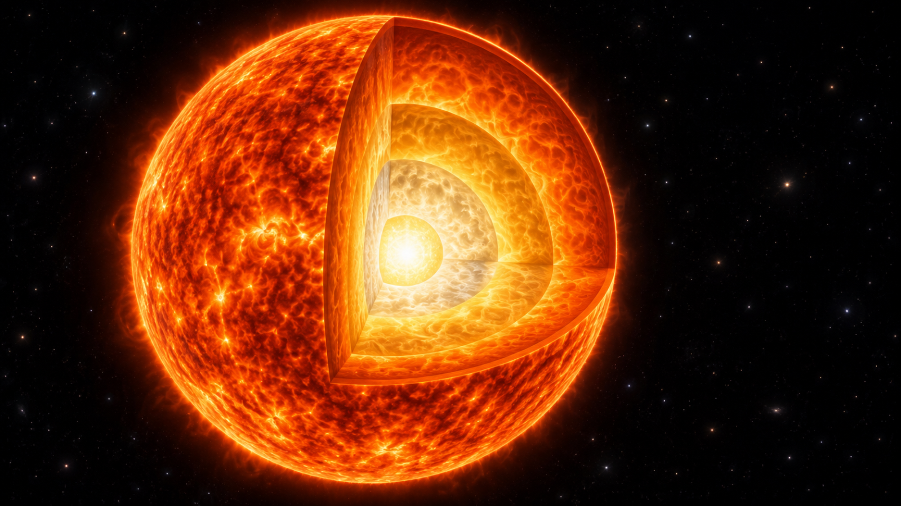
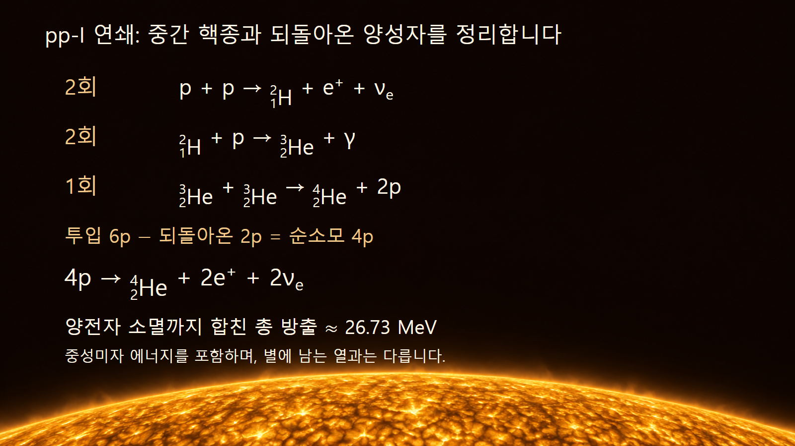
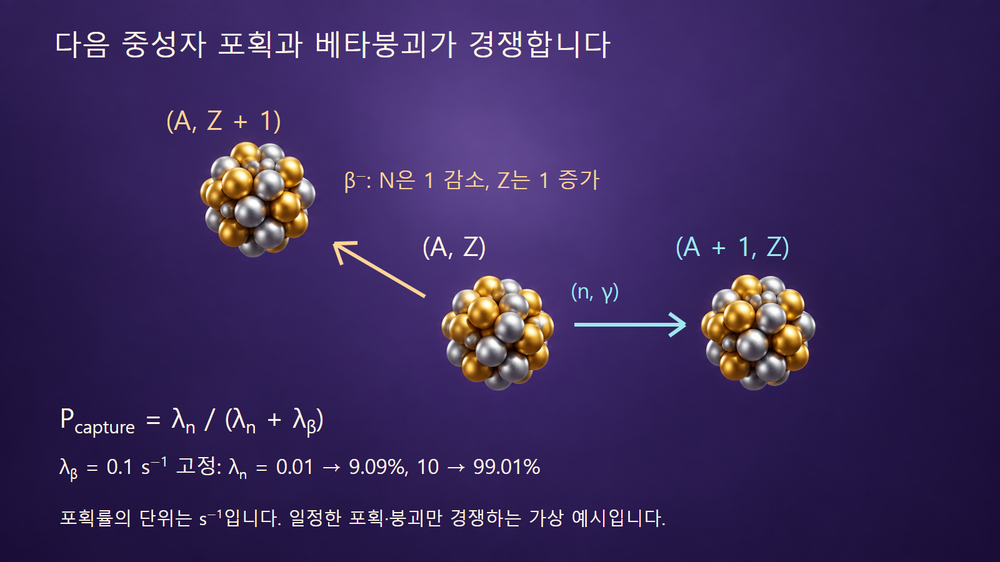

질량·에너지·핵반응 · 040
별의 핵합성
수소 연소의 수지에서 중성자 포획의 시간 경쟁까지 살펴봅니다

별은 빛을 내는 동시에 원소의 조성을 바꿉니다. 하지만 모든 별이 수소부터 가장 무거운 원소까지 같은 순서로 만드는 것은 아닙니다. 핵융합으로 에너지를 얻는 단계, 중성자 포획과 붕괴로 핵종이 바뀌는 경로, 만들어진 물질이 우주로 나오는 과정을 구별해야 원소의 기원을 읽을 수 있습니다.
1. 핵합성은 에너지 생산보다 넓은 개념입니다
핵합성은 핵반응과 붕괴를 거쳐 핵종의 조성이 만들어지고 바뀌는 과정입니다. 별 내부의 안정적인 연소뿐 아니라 폭발적인 환경과 중성자별 합병의 방출물에서도 일어납니다. 반응이 어떤 핵을 만들 수 있는지와 그 반응이 별을 지탱할 만큼 에너지를 공급하는지는 별개의 질문입니다.
별의 질량과 내부 상태는 가능한 연소 단계를 제한합니다. 태양과 비슷한 별은 중심의 수소 연소 이후 헬륨 연소를 거쳐 탄소·산소가 주성분인 백색왜성을 남기는 진화가 대표적입니다. 충분히 무거운 별은 더 높은 온도의 연소 단계로 진행하여 철족 핵이 풍부한 중심부를 만들 수 있습니다. 태양이 결국 철까지 차례로 태워 초신성이 된다고 설명하면 안 됩니다.
별의 바깥층 전체가 중심과 같은 핵반응을 하는 것도 아닙니다. 중심과 껍질의 온도·밀도·조성이 다르고, 물질의 혼합과 이동도 작용합니다. 층을 나눈 별 그림은 이런 차이를 설명하기 위한 모형이며, 모든 별에 똑같은 층의 수와 조성을 지정하는 도면은 아닙니다.
2. 예시 1 — 양성자–양성자 연쇄의 중간 핵을 지웁니다
태양의 수소 연소를 설명하는 대표 경로인 pp-I 연쇄를 봅니다. 먼저 p + p → 2H + e+ + νe가 두 번 일어납니다. 생성된 중수소 각각이 양성자와 반응하여 2H + p → 3He + γ가 두 번 진행됩니다. 마지막으로 3He + 3He → 4He + 2p가 한 번 일어납니다. 여기의 수소·헬륨 기호는 원자핵을 뜻합니다.
각 단계를 합치면 중수소 두 개와 헬륨-3 두 개는 만들어졌다가 다시 소모됩니다. 처음 두 단계에서 투입한 양성자는 합계 여섯 개이지만 마지막 단계에서 두 개가 돌아옵니다. 따라서 순소모는 네 개이며 전체 핵반응 수지는 4p → 4He + 2e+ + 2νe입니다. 순핵종식에서는 광자와 운동에너지 표기를 생략합니다. 네 양성자가 한순간에 동시에 충돌하는 반응을 뜻하지 않습니다. 양전자 두 개는 주변 전자와 소멸하여 추가로 광자를 만듭니다.
양전자 소멸까지 포함한 총 방출에너지는 중성 원자 질량으로 [4m(1H) − m(4He)]c²를 계산하여 구할 수 있습니다. NIST 표의 1.00782503223 u와 4.00260325413 u, 1 u·c² ≈ 931.494 MeV를 쓰면 약 26.73 MeV입니다. 이 값은 중성미자가 가져가는 에너지도 포함합니다. 별에 남아 열이 되는 에너지는 그보다 작으며, pp 연쇄의 분기에 따라서도 달라집니다.

3. 원자 질량을 쓸 때 전자 수지를 함께 봅니다
앞 절의 핵반응식에는 양전자가 최종상태에 있습니다. 순수한 원자핵 질량으로 그 반응만 계산하면 양전자의 정지질량도 최종 질량에 포함해야 합니다. 이후 주변 전자와 소멸할 때 방출되는 정지에너지를 더해야 총 26.73 MeV 수준이 됩니다. 양전자 두 개의 소멸은 전자 두 개까지 함께 사용하므로 추가 에너지가 약 2.044 MeV입니다. 26.73 MeV에 이 값을 다시 더하면 중복 계산입니다.
중성 원자 질량식은 이 전자 수지를 편리하게 반영하는 방법입니다. 실제로 별 중심에 중성 수소 원자가 네 개 모여 있다는 가정은 아닙니다. 고온의 플라스마에서는 전자와 핵이 분리되어 있습니다. 원자 전자결합에너지 수준의 작은 보정은 이 글의 0.01 MeV 수준 반올림에서는 생략합니다. 질량 기준과 최종상태를 일치시키는 것이 핵심입니다.
4. 예시 2 — 헬륨 세 개에서 탄소 한 개로 갑니다
헬륨 연소에서 중요한 삼중알파 과정은 헬륨-4 원자핵 세 개가 탄소-12를 만드는 순반응입니다. 실제 경로에는 매우 불안정한 베릴륨-8과 탄소-12의 들뜬 상태가 관여합니다. 탄소-12의 Hoyle 상태는 이 생성 경로를 크게 돕는 공명 상태입니다. 세 알파입자가 고전적인 단단한 공처럼 늘 동시에 부딪쳐야 한다는 모형과 구별합니다.
탄소-12의 중성 원자 질량은 정의상 12 u입니다. 같은 NIST 헬륨 질량으로 [3 × 4.00260325413 − 12]u × c²를 계산하면 약 7.275 MeV입니다. 원자 질량을 사용할 때 초기 헬륨 원자 셋과 최종 탄소 원자의 전자 수가 모두 여섯 개이므로 전자 정지질량은 상쇄됩니다. 생성된 들뜬 핵이 더 낮은 상태로 가며 감마선 등으로 에너지를 내놓는 과정까지 합친 수지입니다.
이 7.275 MeV는 탄소 바닥상태와 헬륨 세 개의 정지질량 차이입니다. Hoyle 상태의 들뜸에너지를 그대로 가져온 값이 아닙니다. 반응의 전체 Q값과 중간 공명의 준위 에너지는 기준점이 다릅니다. 별에서 탄소가 얼마나 만들어지는지는 이 에너지 차이만 아니라 해당 반응률과 후속 알파포획 등과의 경쟁에 달려 있습니다.
5. 철족 부근에서는 에너지 생산 방식이 한계에 이릅니다
가벼운 핵들이 더 단단하게 결합한 핵으로 바뀌는 여러 반응은 별에 에너지를 공급합니다. 하지만 핵자당 결합에너지가 큰 철족 부근에 도달하면, 무거운 핵끼리 계속 합쳐 에너지를 얻는 방식으로 중심을 지탱하기 어렵습니다. 이것을 철보다 무거운 핵은 어떤 반응으로도 만들어질 수 없다는 뜻으로 읽지 않습니다.
특히 중성자 포획은 전하가 없는 중성자를 더하는 과정이므로 두 양전하 핵 사이의 쿨롱장벽을 같은 방식으로 넘을 필요가 없습니다. 포획과 뒤따르는 베타붕괴는 더 무거운 핵종을 만드는 중요한 경로입니다. 그렇다고 모든 중성자가 반드시 포획되거나 철 이후의 모든 핵종이 한 가지 과정으로 만들어지는 것은 아닙니다. 실제 조성은 포획·광분해·붕괴 등 여러 반응의 경쟁으로 정해집니다.
| 과정 | 주요 변화 | 대표 환경과 해석 |
|---|---|---|
| 수소·헬륨 연소 | 가벼운 핵의 융합 | 별의 내부에서 에너지를 공급하고 조성을 바꿉니다 |
| s 과정 | 포획 사이에 베타붕괴가 끼어듭니다 | AGB 별과 무거운 별의 일부 연소 단계가 기여합니다 |
| r 과정 | 베타붕괴보다 빠른 반복 포획이 가능합니다 | 중성자별 합병 방출물 등이 중요한 환경입니다 |
| 방출·혼합 | 합성된 물질이 별 밖으로 이동합니다 | 항성풍·폭발·합병 방출물이 다음 세대의 재료가 됩니다 |
6. 예시 3 — 빠르다는 말은 베타붕괴와의 비교입니다
s와 r은 각각 slow와 rapid를 뜻하지만 중성자의 이동 속도를 분류하는 말은 아닙니다. 불안정한 핵종이 다음 중성자를 포획할 때까지의 시간과 베타붕괴할 때까지의 시간을 비교합니다. s 과정은 대체로 안정선 가까이에서 진행하고, r 과정에서는 짧은 시간에 여러 중성자를 포획하여 중성자가 많은 핵종으로 갈 수 있습니다. 경로에는 분기점도 있으므로 모든 핵종에 같은 시간 관계를 강제로 적용하지 않습니다.
한 가상 핵종에 대해 포획률 λn과 베타붕괴 상수 λβ가 일정하고, 두 과정만 독립적으로 경쟁한다고 가정합니다. 먼저 포획될 확률은 Pcapture = λn/(λn + λβ)입니다. λβ = 0.1 s−1, λn = 0.01 s−1이면 약 9.09%입니다. 포획률만 10 s−1로 바꾸면 약 99.01%가 됩니다. 핵종 자체의 베타붕괴 상수를 바꾸지 않아도 주로 선택하는 경로가 달라질 수 있습니다.
이 예시의 베타붕괴 평균수명은 1/λβ = 10초이며 반감기는 ln 2/λβ ≈ 6.93초입니다. 두 값을 구별합니다. 예시는 국소적인 시간 경쟁만 설명하며, 한 분기점의 확률로 별 전체를 s 과정 또는 r 과정이라고 판정하는 계산은 아닙니다. 실제 별에서는 중성자 밀도·온도와 반응률이 변하고 더 많은 경로가 함께 작용합니다.

7. 원소가 만들어진 자리와 관측되는 자리는 다릅니다
AGB는 진화한 별의 점근거성가지 단계를 뜻하며, 이 별들의 헬륨 연소층은 s 과정의 주요 현장입니다. 무거운 별의 헬륨·탄소 연소도 s 과정에 기여합니다. 따라서 철보다 무거운 원소를 모두 초신성 폭발의 순간에만 만든다고 설명하면 오래 지속되는 항성 내부의 기여를 놓칩니다.
중성자별 합병은 r 과정과 연결되는 중요한 관측 대상입니다. NASA는 2023년 GRB 230307A와 동반된 킬로노바 관측에서 Webb의 스펙트럼을 통해 텔루륨을 확인했다고 보고했습니다. 이는 특정 관측으로 무거운 원소의 생성 환경을 추적하는 예이며, 우주의 모든 무거운 원소가 오직 이 환경에서 만들어졌다는 증거는 아닙니다.
핵합성 뒤의 물질이 우주 공간에 방출되고 다른 가스와 섞여야 다음 세대의 별과 행성에 들어갈 수 있습니다. 지금 관측한 별 표면의 원소비도 그 별 내부의 합성뿐 아니라 태어날 때의 조성, 혼합, 동반성에서 받은 물질의 영향을 반영할 수 있습니다. 원소의 계보를 찾는 일은 핵반응 수지와 천체의 진화·이동을 함께 읽는 작업입니다.